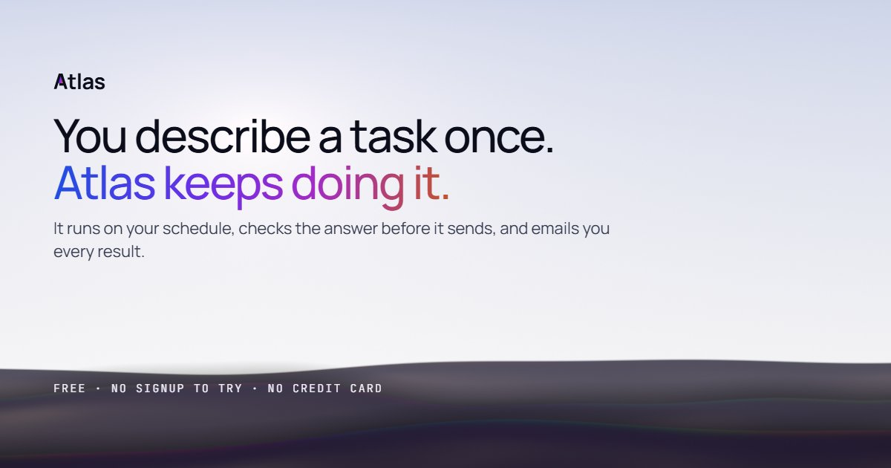

Atlas
Type “every weekday at 8am, send me the top tech news” and Atlas runs it on that schedule, checks the answer, and sends you the result.
- Built
- 1 Apr – 4 Oct 2026, with commits on 112 days
- Public launch
- 27 Aug 2026
- Commits
- 2,720 to production
- Releases
- 337 internal before 1.0, then 13 public
